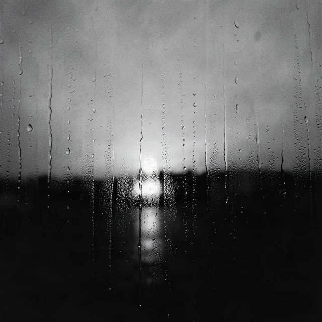
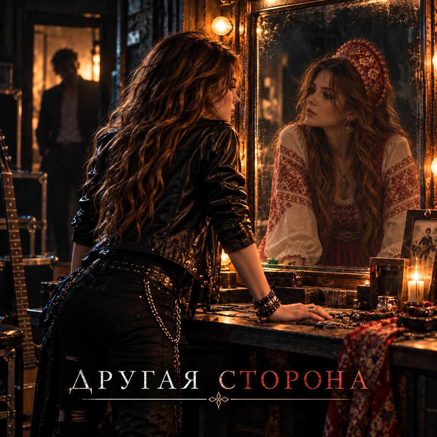
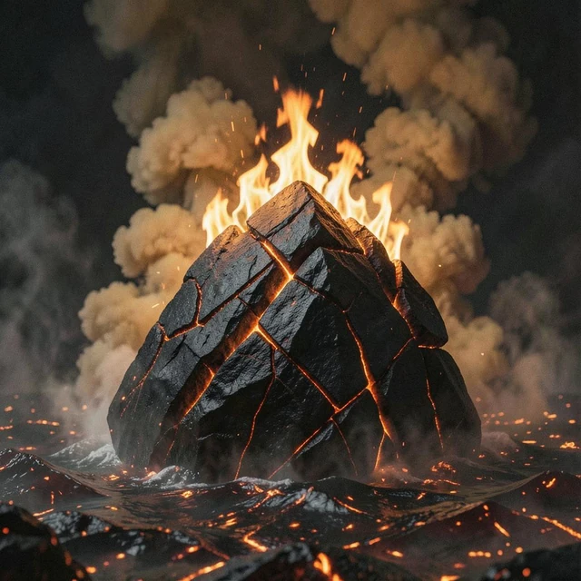
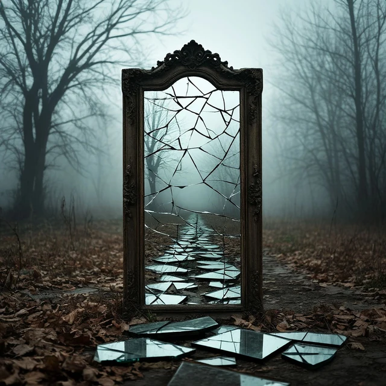
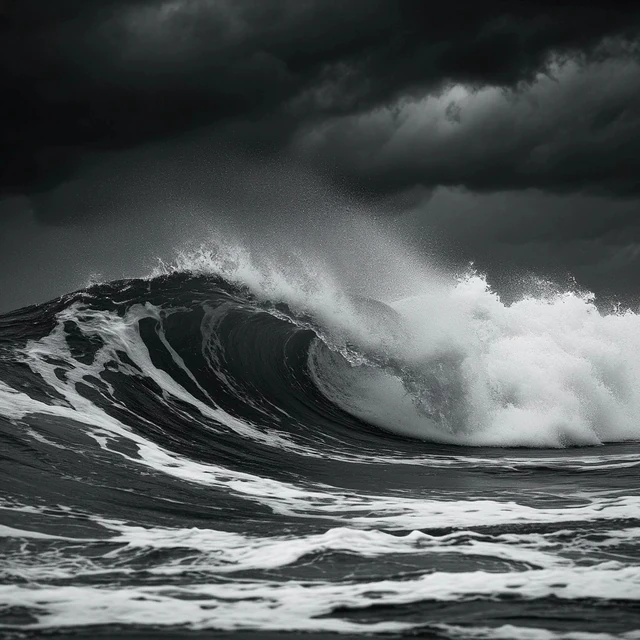
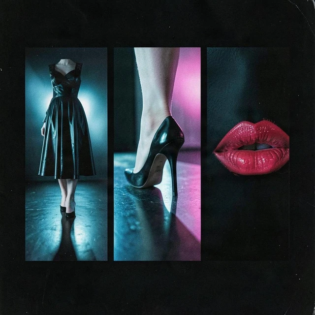
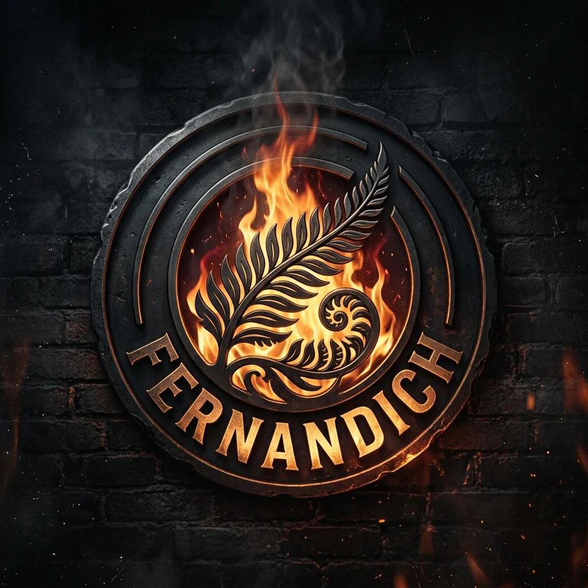

Музыкальный проект fernandich
МУЗЫКА БЕЗ ГРАНИЦ
От тяжёлого рока до тихих признаний. За каждым звуком — своя история.
Новый альбом · готовится к выходу
ДРУГАЯ СТОРОНА
Семь песен. Семь нот. Семь граней одного целого.
Новый альбом / готовится к выходу
ДРУГАЯ СТОРОНА
Семь историй о том, что не всегда видно с первого взгляда.

Тяжёлые гитары, народные мотивы, блюзовая теплота и личная интонация. Разные голоса одного внутреннего мира — от силы и памяти до близости и движения дальше.
- 01Белая берёзка
- 02Воин
- 03Дверь
- 04Слёзы небес
- 05Не спеши
- 06Просто держи
- 07Дорога
«У каждого есть другая сторона. Не всегда её можно увидеть. Но иногда — можно услышать».
Пока готовится к релизу. Дата не объявлена.
Дискография
РАННИЕ РЕЛИЗЫ
С чего начиналась история fernandich. Оригинальные обложки и песни проекта.

Королева своей карты

Лабиринты
Одна

Шторм

Плохая девчонка

О проекте
ЗВУЧАТЬ ПО-СВОЕМУ
fernandich — музыкальный проект, в котором тяжёлый рок встречается с народными мотивами, а мощный вокал — с тихими историями о близости, памяти и пути.
Каждая песня открывает новую сторону. Жанры меняются, но главное остаётся неизменным — характер, эмоции и собственный звук.
Официальные страницы
ГДЕ СЛУШАТЬ
Выбирай удобный сервис. Наличие отдельных релизов может отличаться.